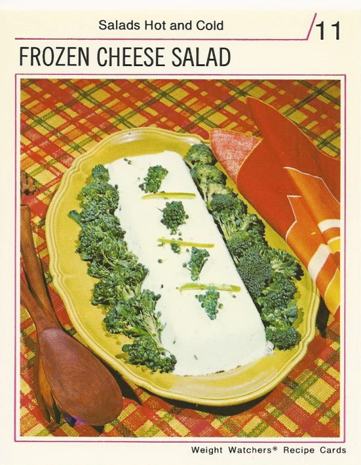

Frozen Cheese Salad Recipe.......?

Image Credits: Vintage Recipe Cards
Description
The image shows it all. It's a brick of cheese with a side of brocoli florets.
Ingredients
- 2 2/3 cups cottage cheese
- 8 ounces blue cheese
- 1/2 cup buttermilk
- 2 tablespoons chives
- 2 teaspoons grated lemon peel
- 1 teaspoon barbecue spice
- 1 teaspoon Worcestershire sauce
- 2 cups raw broccoli florets
- Green pepper strips, to garnish
Steps
- Let cheese stand at room temperature for 30 minutes.
- Place in blender container with buttermilk, chives, lemon peel, barbecue spice, and Worcestershire; process at medium speed until mixture is smooth.
- Transfer to freezer tray.
- Freeze at least 3 hours.
- Remove from freezer 15 minutes before serving.
- Unmold on serving platter.
- Surround with broccoli florets. Garnish with green pepper strips. Divide evenly.
Servings
Makes 8 luncheon servings.
Recipe Credits
Recipe taken from www.vintagerecipecards.com
Website Navigation
Home Page
Top of Page
Next Recipe